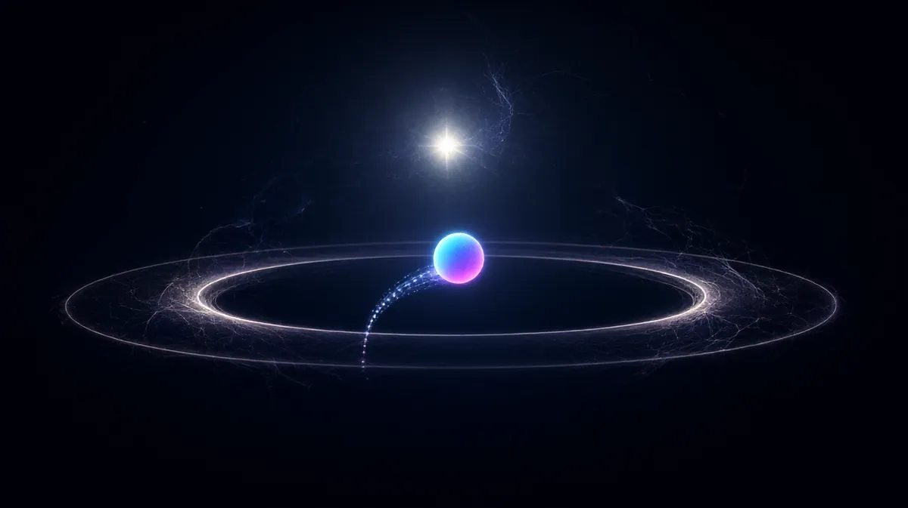
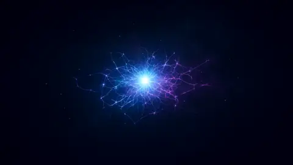
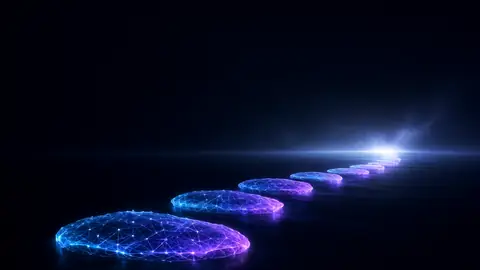

2:32Трансформационный тренинг · 2–3 ч
2:32Трансформационный тренинг · 2–3 чТренинг «Всё начинается с мечты!»
Мечта живёт в самом сердце и греет душу. Какие-то мечты мы готовы воплотить, но есть та самая — заветная. На тренинге прикоснёмся именно к ней.
5 000 ₽Записаться
От мечты — к проверенной цели и конкретным шагам. Модуль соединяет вдохновение и системные действия, чтобы цель вела вас, а не отягощала.

Вы так виртуозно направляли ход мыслей вопросами, что почти абстрактная в начале занятия мечта трансформировалась в понятные составляющие и довольно чёткий план действий.
Участница модуля «Квантовый скачок от мечты к цели»
Мой запрос был в том, чтобы вдохновение перенести в системные действия, и, как всегда у вас на тренинге, всё получилось. Появилось ещё больше энергии, сделала сразу конкретные шаги.
Участница модуля «Квантовый скачок от мечты к цели»
2:32Трансформационный тренинг · 2–3 чМечта живёт в самом сердце и греет душу. Какие-то мечты мы готовы воплотить, но есть та самая — заветная. На тренинге прикоснёмся именно к ней.
 2:36Трансформационный тренинг · 2–3 ч
2:36Трансформационный тренинг · 2–3 чСколько планов ты кладёшь «на полочку» из-за отсутствия идеальных условий? Пора выстроить мостик к мечте и начать действовать сейчас — с тем, что уже есть!

2:22Трансформационный тренинг · 2–3 чКогда мечта превращается в цель, она становится путеводной звездой. Но что, если маршрут ведёт не туда, куда ты действительно хочешь? Проверим, соответствует ли цель твоим ценностям и мечтам — или навязана извне.

2:21Трансформационный тренинг · 2–3 чПрактический тренинг для тех, кто хочет превратить амбиции в реальность.
Стоимость: · Ближайшая дата:
Напишите Марине — она пришлёт детали для оплаты.
Текст сообщения (подставится в Telegram и скопируется):
Все сессии проходят онлайн и вживую — с Мариной Степановой. Группы до 8 человек.
Бесплатный тест: 8 ситуаций → персональный разбор и следующий шаг.
Пройти тест